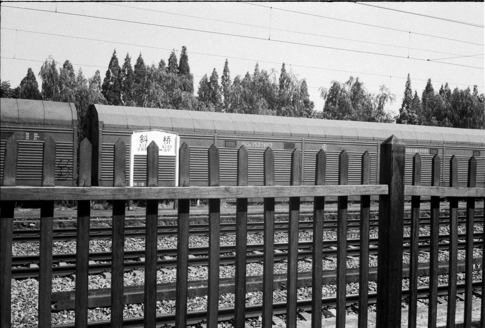
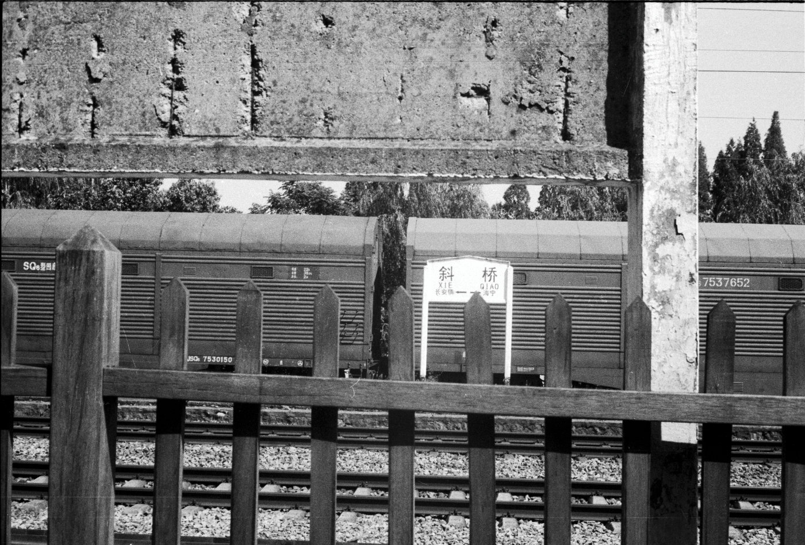
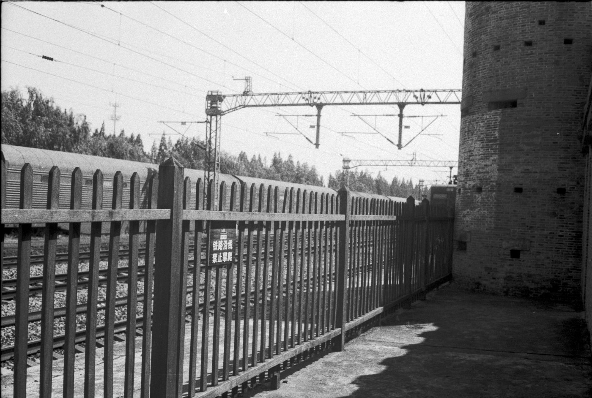
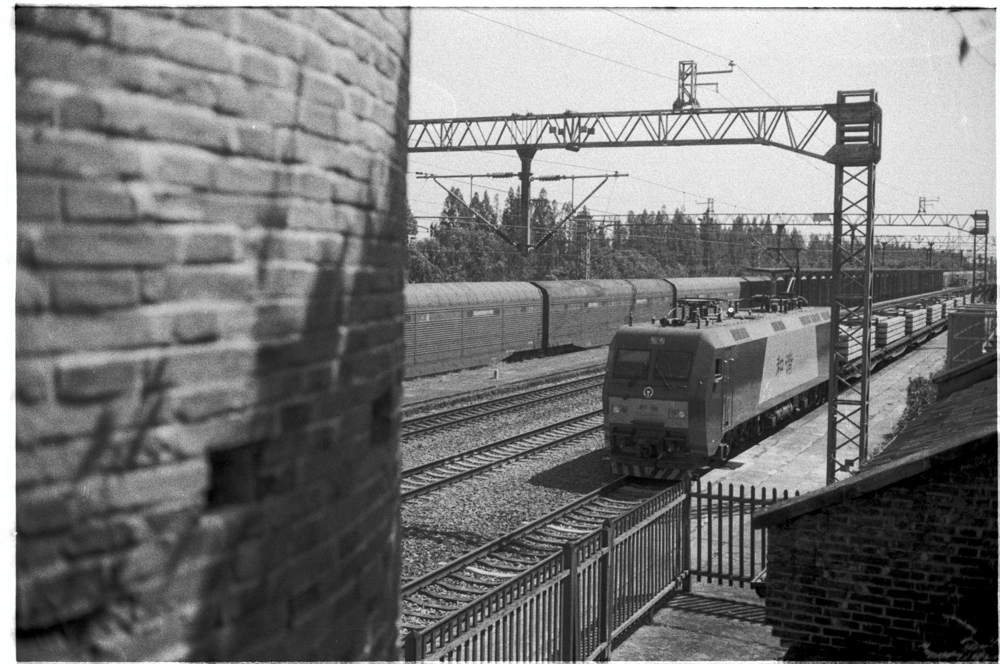
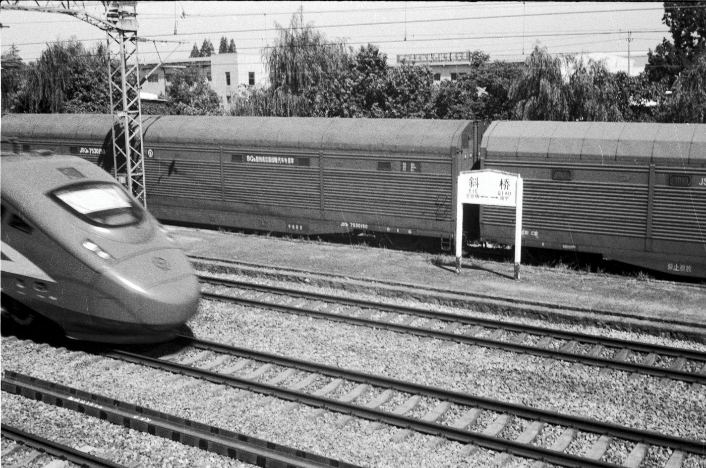

刚来到斜桥火车站旧址时，让我觉得有点小惊艳。
地方虽小，但有炮楼、火车轨道、绿皮车厢、站台等。也很适合作为党建基地，其中炮楼就是侵华日军搭建的。
看着眼前的这些历史遗迹，遥想当年，现在的岁月静好背后藏着多少轰轰烈烈啊。






铁轨还在，旧车厢停在原处，曾经的车站已经成为一处安静的历史遗址。这一次带着 Olympus 35SPn 和一卷 Fomapan 200，用黑白胶片重新看一遍斜桥火车站。
刚来到斜桥火车站旧址时，让我觉得有点小惊艳。
地方虽小，但有炮楼、火车轨道、绿皮车厢、站台等。也很适合作为党建基地，其中炮楼就是侵华日军搭建的。
看着眼前的这些历史遗迹，遥想当年，现在的岁月静好背后藏着多少轰轰烈烈啊。




